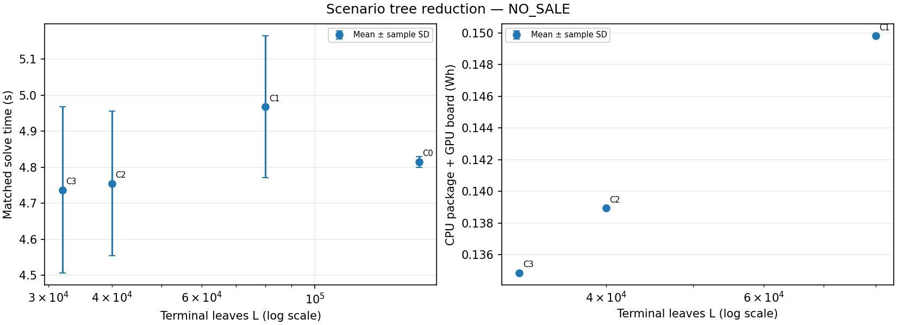
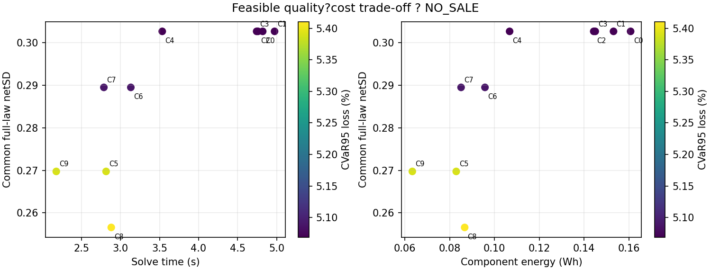
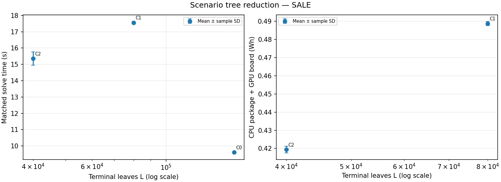
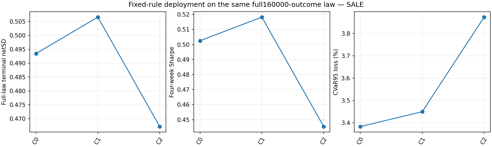
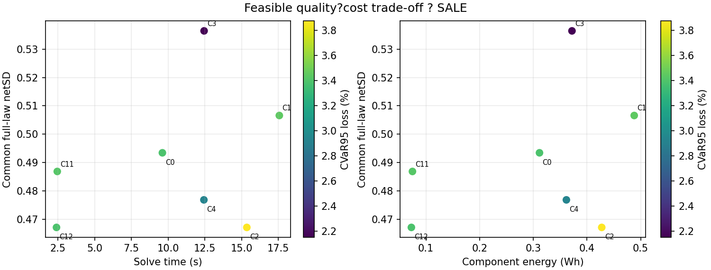

4. Results
Completed 78 of 78 scheduled trials. All scheduled cases complete.
Configuration key
| ID | Weekly/terminal branching | Decision nodes N | Terminal leaves L |
|---|---|---|---|
| C0 | 20 / 20 / 20 / 20 | 8421 | 160000 |
| C1 | 20 / 20 / 20 / 10 | 8421 | 80000 |
| C2 | 20 / 20 / 20 / 5 | 8421 | 40000 |
| C3 | 20 / 20 / 20 / 4 | 8421 | 32000 |
| C4 | 20 / 20 / 10 / 4 | 4421 | 16000 |
| C5 | 20 / 20 / 5 / 4 | 2421 | 8000 |
| C6 | 20 / 20 / 4 / 4 | 2021 | 6400 |
| C7 | 20 / 10 / 4 / 4 | 1021 | 3200 |
| C8 | 20 / 5 / 4 / 4 | 521 | 1600 |
| C9 | 20 / 4 / 4 / 4 | 421 | 1280 |
| C10 | 10 / 4 / 4 / 4 | 211 | 640 |
| C11 | 5 / 4 / 4 / 4 | 106 | 320 |
| C12 | 4 / 4 / 4 / 4 | 85 | 256 |
NO_SALE



| ID | Time s: mean ± SD | Range s | Energy Wh: mean ± SD | Range Wh | Speed-up |
|---|---|---|---|---|---|
| C0 | 4.822 ± 0.014 (n=3) | 4.813–4.839 | 0.1608 ± 0.0019 (n=3) | 0.1590–0.1627 | 1.00 |
| C1 | 4.974 ± 0.197 (n=3) | 4.845–5.200 | 0.1531 ± 0.0067 (n=3) | 0.1486–0.1609 | 0.97 |
| C2 | 4.762 ± 0.200 (n=3) | 4.638–4.993 | 0.1443 ± 0.0101 (n=3) | 0.1379–0.1559 | 1.01 |
| C3 | 4.744 ± 0.231 (n=3) | 4.486–4.930 | 0.1450 ± 0.0088 (n=3) | 0.1350–0.1514 | 1.02 |
| C4 | 3.535 ± 0.091 (n=3) | 3.450–3.632 | 0.1068 ± 0.0011 (n=3) | 0.1056–0.1077 | 1.36 |
| C5 | 2.815 ± 0.063 (n=3) | 2.768–2.887 | 0.0829 ± 0.0032 (n=3) | 0.0797–0.0860 | 1.71 |
| C6 | 3.132 ± 0.018 (n=3) | 3.111–3.145 | 0.0958 ± 0.0021 (n=3) | 0.0934–0.0973 | 1.54 |
| C7 | 2.787 ± 0.125 (n=3) | 2.687–2.927 | 0.0851 ± 0.0042 (n=3) | 0.0804–0.0885 | 1.73 |
| C8 | 2.881 ± 0.054 (n=3) | 2.841–2.942 | 0.0867 ± 0.0016 (n=3) | 0.0855–0.0886 | 1.67 |
| C9 | 2.177 ± 0.025 (n=3) | 2.153–2.203 | 0.0634 ± 0.0019 (n=3) | 0.0621–0.0655 | 2.22 |
| C10 | 2.017 ± 0.050 (n=3) | 1.963–2.062 | 0.0593 ± 0.0006 (n=3) | 0.0587–0.0599 | 2.39 |
| C11 | 1.990 ± 0.004 (n=3) | 1.987–1.994 | 0.0589 ± 0.0007 (n=3) | 0.0583–0.0597 | 2.42 |
| C12 | 2.265 ± 0.013 (n=3) | 2.257–2.280 | 0.0677 ± 0.0010 (n=3) | 0.0670–0.0688 | 2.13 |
Full-tree deployment infeasible: C10, C11, C12. At least one original-node constraint fails. Full-law risk/performance metrics are unavailable; no repair, fallback or retuning is substituted.
Common full-law performance
| ID | netSD | Sharpe | Rachev | Sortino | Mean % |
|---|---|---|---|---|---|
| C0 | 0.3026 | 0.2289 | 1.0557 | 0.3498 | 0.4375 |
| C1 | 0.3026 | 0.2289 | 1.0557 | 0.3498 | 0.4375 |
| C2 | 0.3026 | 0.2289 | 1.0557 | 0.3498 | 0.4375 |
| C3 | 0.3026 | 0.2289 | 1.0557 | 0.3498 | 0.4375 |
| C4 | 0.3026 | 0.2289 | 1.0557 | 0.3498 | 0.4375 |
| C5 | 0.2697 | 0.2691 | 1.0832 | 0.4172 | 0.5528 |
| C6 | 0.2895 | 0.2149 | 1.0236 | 0.3186 | 0.3973 |
| C7 | 0.2895 | 0.2149 | 1.0236 | 0.3186 | 0.3973 |
| C8 | 0.2566 | 0.2575 | 1.0527 | 0.3877 | 0.5126 |
| C9 | 0.2697 | 0.2691 | 1.0832 | 0.4172 | 0.5528 |
| ID | CVaR95 % | Loss probability % | Worst return % | Expected weekly DD % | Turnover EUR |
|---|---|---|---|---|---|
| C0 | 5.0689 | 27.0517 | -19.6004 | 0.6246 | 1000.00 |
| C1 | 5.0689 | 27.0517 | -19.6004 | 0.6246 | 1000.00 |
| C2 | 5.0689 | 27.0517 | -19.6004 | 0.6246 | 1000.00 |
| C3 | 5.0689 | 27.0517 | -19.6004 | 0.6246 | 1000.00 |
| C4 | 5.0689 | 27.0517 | -19.6004 | 0.6246 | 1000.00 |
| C5 | 5.3901 | 24.3167 | -21.2522 | 0.6557 | 2499.99 |
| C6 | 5.0884 | 22.6967 | -19.7806 | 0.5306 | 0.00 |
| C7 | 5.0884 | 22.6967 | -19.7806 | 0.5306 | 0.00 |
| C8 | 5.4105 | 20.0127 | -21.4324 | 0.5618 | 1499.99 |
| C9 | 5.3901 | 24.3167 | -21.2522 | 0.6557 | 2499.99 |
Approximation and initial-decision changes
| ID | Full-law netSD Δ | Reduced-law netSD | Changed assets | Half-L1 EUR | Cost/quality dominated |
|---|---|---|---|---|---|
| C0 | 0.0000 | 0.3026 | 0 | 0.00 | True |
| C1 | 0.0000 | 0.3013 | 0 | 0.00 | True |
| C2 | 0.0000 | 0.3113 | 0 | 0.00 | True |
| C3 | 0.0000 | 0.2914 | 0 | 0.00 | True |
| C4 | 0.0000 | 0.2761 | 0 | 0.00 | False |
| C5 | -0.0329 | 0.2754 | 0 | 0.00 | True |
| C6 | -0.0132 | 0.2667 | 2 | 500.00 | True |
| C7 | -0.0132 | 0.2515 | 2 | 500.00 | False |
| C8 | -0.0461 | 0.3450 | 2 | 500.00 | True |
| C9 | -0.0329 | 0.3121 | 0 | 0.00 | False |
| C10 | — | 0.2906 | 0 | 0.00 | None |
| C11 | — | 0.5441 | 0 | 0.00 | None |
| C12 | — | 0.6038 | 3 | 868.40 | None |
Initial quantities changed from full-tree baseline
| ID | Asset | Full-tree units | Reduced-tree units | Difference |
|---|---|---|---|---|
| C6 | SE0014261889 | 43.588000 | 0.000000 | -43.588000 |
| C6 | US_PFE | 16.968323 | 5.491688 | -11.476635 |
| C7 | SE0014261889 | 43.588000 | 0.000000 | -43.588000 |
| C7 | US_PFE | 16.968323 | 5.491688 | -11.476635 |
| C8 | SE0014261889 | 43.588000 | 0.000000 | -43.588000 |
| C8 | US_PFE | 16.968323 | 5.491688 | -11.476635 |
| C12 | VLP1L | 117.000000 | 165.000000 | 48.000000 |
| C12 | SE0014261889 | 43.588000 | 0.000000 | -43.588000 |
| C12 | US_PFE | 16.968323 | 5.491688 | -11.476635 |
Fitted equations, parameters and errors
time — Nodes and leaves: \(y=2.2374238+0.3042152N/1000+0.0043403541L/10000\). a=2.23742378 ± 0.09826615; b=0.30421520 ± 0.03015555; c=0.00434035 ± 0.02380870; R²=0.9606; RMSE=0.21876663.
time — Leaf power with overhead: \(y=1.6164438e-10+2.3984659(L/1000)^{0.1573343}\). a=0.00000000 ± 2.44564411; b=2.39846587 ± 2.42698816; c=0.15733430 ± 0.11681435; R²=0.9022; RMSE=0.34468741.
energy — Nodes and leaves: \(y=0.066770148+0.0088794655N/1000+0.0012291839L/10000\). a=0.06677015 ± 0.00325657; b=0.00887947 ± 0.00099936; c=0.00122918 ± 0.00078903; R²=0.9598; RMSE=0.00724999.
energy — Leaf power with overhead: \(y=0.012632705+0.058137029(L/1000)^{0.19720661}\). a=0.01263270 ± 0.04472647; b=0.05813703 ± 0.04387020; c=0.19720661 ± 0.10049714; R²=0.9270; RMSE=0.00976454.
Search effort and compute resources
| ID | Proposals | Scorer backend | CUDA wealth | Host RAM peak % | Same root in repeats |
|---|---|---|---|---|---|
| C0 | 123 | CPU | True | 7.98 | True |
| C1 | 123 | CPU | True | 8.07 | True |
| C2 | 123 | CPU | True | 8.00 | True |
| C3 | 123 | CPU | True | 7.92 | True |
| C4 | 123 | CPU | True | 8.08 | True |
| C5 | 123 | CPU | True | 7.91 | True |
| C6 | 130 | CPU | True | 7.96 | True |
| C7 | 130 | CPU | True | 7.96 | True |
| C8 | 130 | CPU | True | 8.01 | True |
| C9 | 123 | CPU | True | 8.02 | True |
| C10 | 123 | CPU | True | 8.00 | True |
| C11 | 123 | CPU | True | 7.96 | True |
| C12 | 236 | CPU | True | 7.97 | True |
CPU48 is the worker cap. CUDA performs wealth arithmetic when enabled; scoring uses the faster exactly checked backend. Host RAM is total machine use, not isolated process memory. Proposal counts include infeasible candidates rejected before scoring.
Separated time and energy scopes
| ID | Scope | Time s: mean ± SD | Energy Wh: mean ± SD |
|---|---|---|---|
| C0 | tree reduction | 0.002 ± 0.000 (n=3) | — ± — (n=0) |
| C0 | reduced reference preparation | 2.600 ± 0.043 (n=3) | 0.0811 ± 0.0011 (n=3) |
| C0 | solver initialisation | 0.066 ± 0.003 (n=3) | 0.0030 ± — (n=1) |
| C0 | optimisation | 2.146 ± 0.045 (n=3) | 0.0778 ± 0.0019 (n=3) |
| C0 | common full policy evaluation | 0.228 ± — (n=1) | 0.0091 ± — (n=1) |
| C0 | Startup/loading/supervision residual | 4.421 ± 0.098 (n=3) | 0.1100 ± 0.0066 (n=3) |
| C1 | tree reduction | 0.827 ± 0.003 (n=3) | 0.0187 ± 0.0004 (n=3) |
| C1 | reduced reference preparation | 2.044 ± 0.032 (n=3) | 0.0623 ± 0.0012 (n=3) |
| C1 | solver initialisation | 0.057 ± 0.002 (n=3) | 0.0026 ± — (n=1) |
| C1 | optimisation | 2.039 ± 0.180 (n=3) | 0.0705 ± 0.0061 (n=3) |
| C1 | common full reference preparation | 1.721 ± — (n=1) | 0.0689 ± — (n=1) |
| C1 | common full policy evaluation | 0.153 ± — (n=1) | 0.0061 ± — (n=1) |
| C1 | Startup/loading/supervision residual | 4.404 ± 0.256 (n=3) | 0.1144 ± 0.0100 (n=3) |
| C2 | tree reduction | 0.781 ± 0.004 (n=3) | 0.0176 ± 0.0005 (n=3) |
| C2 | reduced reference preparation | 1.932 ± 0.060 (n=3) | 0.0583 ± 0.0005 (n=3) |
| C2 | solver initialisation | 0.051 ± 0.004 (n=3) | 0.0024 ± — (n=1) |
| C2 | optimisation | 1.991 ± 0.253 (n=3) | 0.0670 ± 0.0100 (n=3) |
| C2 | common full reference preparation | 1.839 ± — (n=1) | 0.0751 ± — (n=1) |
| C2 | common full policy evaluation | 0.154 ± — (n=1) | 0.0044 ± — (n=1) |
| C2 | Startup/loading/supervision residual | 4.606 ± 0.254 (n=3) | 0.1239 ± 0.0128 (n=3) |
| C3 | tree reduction | 0.767 ± 0.001 (n=3) | 0.0172 ± 0.0003 (n=3) |
| C3 | reduced reference preparation | 1.829 ± 0.006 (n=3) | 0.0538 ± 0.0007 (n=3) |
| C3 | solver initialisation | 0.052 ± 0.003 (n=3) | 0.0025 ± — (n=1) |
| C3 | optimisation | 2.089 ± 0.224 (n=3) | 0.0719 ± 0.0089 (n=3) |
| C3 | common full reference preparation | 1.779 ± — (n=1) | 0.0746 ± — (n=1) |
| C3 | common full policy evaluation | 0.179 ± — (n=1) | 0.0045 ± — (n=1) |
| C3 | Startup/loading/supervision residual | 4.609 ± 0.206 (n=3) | 0.1231 ± 0.0152 (n=3) |
| C4 | tree reduction | 0.515 ± 0.001 (n=3) | 0.0115 ± 0.0002 (n=3) |
| C4 | reduced reference preparation | 1.768 ± 0.041 (n=3) | 0.0533 ± 0.0025 (n=3) |
| C4 | solver initialisation | 0.046 ± 0.002 (n=3) | 0.0023 ± 0.0002 (n=2) |
| C4 | optimisation | 1.198 ± 0.084 (n=3) | 0.0402 ± 0.0029 (n=3) |
| C4 | common full reference preparation | 1.731 ± — (n=1) | 0.0693 ± — (n=1) |
| C4 | common full policy evaluation | 0.149 ± — (n=1) | 0.0063 ± — (n=1) |
| C4 | Startup/loading/supervision residual | 4.828 ± 0.025 (n=3) | 0.1267 ± 0.0081 (n=3) |
| C5 | tree reduction | 0.316 ± 0.000 (n=3) | 0.0074 ± 0.0002 (n=3) |
| C5 | reduced reference preparation | 1.695 ± 0.055 (n=3) | 0.0482 ± 0.0018 (n=3) |
| C5 | solver initialisation | 0.044 ± 0.001 (n=3) | 0.0023 ± 0.0002 (n=3) |
| C5 | optimisation | 0.749 ± 0.008 (n=3) | 0.0249 ± 0.0011 (n=3) |
| C5 | common full reference preparation | 1.720 ± — (n=1) | 0.0698 ± — (n=1) |
| C5 | common full policy evaluation | 0.295 ± — (n=1) | 0.0103 ± — (n=1) |
| C5 | Startup/loading/supervision residual | 4.506 ± 0.071 (n=3) | 0.1240 ± 0.0116 (n=3) |
| C6 | tree reduction | 0.280 ± 0.008 (n=3) | 0.0062 ± 0.0009 (n=3) |
| C6 | reduced reference preparation | 1.676 ± 0.012 (n=3) | 0.0494 ± 0.0012 (n=3) |
| C6 | solver initialisation | 0.048 ± 0.001 (n=3) | 0.0025 ± 0.0001 (n=2) |
| C6 | optimisation | 1.118 ± 0.009 (n=3) | 0.0380 ± 0.0003 (n=3) |
| C6 | common full reference preparation | 1.733 ± — (n=1) | 0.0711 ± — (n=1) |
| C6 | common full policy evaluation | 0.151 ± — (n=1) | 0.0061 ± — (n=1) |
| C6 | Startup/loading/supervision residual | 4.206 ± 0.071 (n=3) | 0.1167 ± 0.0094 (n=3) |
| C7 | tree reduction | 0.254 ± 0.001 (n=3) | 0.0059 ± 0.0005 (n=3) |
| C7 | reduced reference preparation | 1.665 ± 0.033 (n=3) | 0.0497 ± 0.0037 (n=3) |
| C7 | solver initialisation | 0.045 ± 0.002 (n=3) | — ± — (n=0) |
| C7 | optimisation | 0.815 ± 0.122 (n=3) | 0.0286 ± 0.0042 (n=3) |
| C7 | common full reference preparation | 1.748 ± — (n=1) | 0.0701 ± — (n=1) |
| C7 | common full policy evaluation | 0.164 ± — (n=1) | 0.0066 ± — (n=1) |
| C7 | Startup/loading/supervision residual | 4.548 ± 0.042 (n=3) | 0.1224 ± 0.0045 (n=3) |
| C8 | tree reduction | 0.178 ± 0.000 (n=3) | 0.0038 ± 0.0003 (n=3) |
| C8 | reduced reference preparation | 1.646 ± 0.018 (n=3) | 0.0479 ± 0.0001 (n=3) |
| C8 | solver initialisation | 0.044 ± 0.003 (n=3) | 0.0024 ± 0.0002 (n=2) |
| C8 | optimisation | 1.002 ± 0.046 (n=3) | 0.0330 ± 0.0011 (n=3) |
| C8 | common full reference preparation | 1.757 ± — (n=1) | 0.0724 ± — (n=1) |
| C8 | common full policy evaluation | 0.295 ± — (n=1) | 0.0103 ± — (n=1) |
| C8 | Startup/loading/supervision residual | 4.403 ± 0.056 (n=3) | 0.1180 ± 0.0091 (n=3) |
| C9 | tree reduction | 0.164 ± 0.001 (n=3) | 0.0035 ± 0.0001 (n=3) |
| C9 | reduced reference preparation | 1.652 ± 0.022 (n=3) | 0.0479 ± 0.0012 (n=3) |
| C9 | solver initialisation | 0.045 ± 0.002 (n=3) | 0.0023 ± 0.0003 (n=2) |
| C9 | optimisation | 0.309 ± 0.003 (n=3) | 0.0101 ± 0.0002 (n=3) |
| C9 | common full reference preparation | 1.760 ± — (n=1) | 0.0753 ± — (n=1) |
| C9 | common full policy evaluation | 0.303 ± — (n=1) | 0.0110 ± — (n=1) |
| C9 | Startup/loading/supervision residual | 4.080 ± 0.010 (n=3) | 0.1143 ± 0.0060 (n=3) |
| C10 | tree reduction | 0.116 ± 0.001 (n=3) | 0.0027 ± 0.0004 (n=3) |
| C10 | reduced reference preparation | 1.662 ± 0.056 (n=3) | 0.0489 ± 0.0013 (n=3) |
| C10 | solver initialisation | 0.044 ± 0.003 (n=3) | 0.0025 ± — (n=1) |
| C10 | optimisation | 0.189 ± 0.003 (n=3) | 0.0064 ± 0.0004 (n=3) |
| C10 | common full reference preparation | 1.824 ± — (n=1) | 0.0736 ± — (n=1) |
| C10 | common full policy evaluation | 0.008 ± — (n=1) | — ± — (n=0) |
| C10 | Startup/loading/supervision residual | 4.308 ± 0.160 (n=3) | 0.1210 ± 0.0023 (n=2) |
| C11 | tree reduction | 0.090 ± 0.000 (n=3) | 0.0020 ± 0.0001 (n=3) |
| C11 | reduced reference preparation | 1.621 ± 0.016 (n=3) | 0.0480 ± 0.0013 (n=3) |
| C11 | solver initialisation | 0.050 ± 0.015 (n=3) | — ± — (n=0) |
| C11 | optimisation | 0.222 ± 0.028 (n=3) | 0.0080 ± 0.0015 (n=3) |
| C11 | common full reference preparation | 1.804 ± — (n=1) | 0.0734 ± — (n=1) |
| C11 | common full policy evaluation | 0.007 ± — (n=1) | — ± — (n=0) |
| C11 | Startup/loading/supervision residual | 4.380 ± 0.110 (n=3) | 0.1254 ± 0.0138 (n=2) |
| C12 | tree reduction | 0.085 ± 0.001 (n=3) | 0.0016 ± 0.0001 (n=3) |
| C12 | reduced reference preparation | 1.632 ± 0.020 (n=3) | 0.0471 ± 0.0013 (n=3) |
| C12 | solver initialisation | 0.043 ± 0.001 (n=3) | 0.0024 ± 0.0002 (n=3) |
| C12 | optimisation | 0.497 ± 0.013 (n=3) | 0.0165 ± 0.0015 (n=3) |
| C12 | common full reference preparation | 1.810 ± — (n=1) | 0.0741 ± — (n=1) |
| C12 | common full policy evaluation | 0.050 ± — (n=1) | — ± — (n=0) |
| C12 | Startup/loading/supervision residual | 4.077 ± 0.097 (n=3) | 0.1144 ± 0.0054 (n=2) |
SALE



| ID | Time s: mean ± SD | Range s | Energy Wh: mean ± SD | Range Wh | Speed-up |
|---|---|---|---|---|---|
| C0 | 9.613 ± 0.030 (n=3) | 9.580–9.637 | 0.3115 ± 0.0028 (n=3) | 0.3084–0.3140 | 1.00 |
| C1 | 17.566 ± 0.062 (n=3) | 17.515–17.635 | 0.4880 ± 0.0017 (n=3) | 0.4862–0.4897 | 0.55 |
| C2 | 15.356 ± 0.408 (n=3) | 15.053–15.820 | 0.4275 ± 0.0135 (n=3) | 0.4186–0.4430 | 0.63 |
| C3 | 12.449 ± 1.315 (n=3) | 11.653–13.967 | 0.3720 ± 0.0445 (n=3) | 0.3422–0.4232 | 0.77 |
| C4 | 12.435 ± 0.833 (n=3) | 11.473–12.924 | 0.3616 ± 0.0206 (n=3) | 0.3378–0.3735 | 0.77 |
| C5 | 7.133 ± 0.452 (n=3) | 6.862–7.655 | 0.2307 ± 0.0169 (n=3) | 0.2204–0.2502 | 1.35 |
| C6 | 6.184 ± 0.059 (n=3) | 6.137–6.251 | 0.1999 ± 0.0017 (n=3) | 0.1980–0.2013 | 1.55 |
| C7 | 4.380 ± 0.006 (n=3) | 4.374–4.385 | 0.1383 ± 0.0014 (n=3) | 0.1369–0.1398 | 2.19 |
| C8 | 3.481 ± 0.209 (n=3) | 3.350–3.722 | 0.1074 ± 0.0067 (n=3) | 0.1032–0.1151 | 2.76 |
| C9 | 3.181 ± 0.025 (n=3) | 3.152–3.199 | 0.0970 ± 0.0007 (n=3) | 0.0965–0.0978 | 3.02 |
| C10 | 2.700 ± 0.030 (n=3) | 2.671–2.730 | 0.0828 ± 0.0013 (n=3) | 0.0814–0.0839 | 3.56 |
| C11 | 2.462 ± 0.020 (n=3) | 2.443–2.483 | 0.0749 ± 0.0041 (n=3) | 0.0706–0.0788 | 3.90 |
| C12 | 2.409 ± 0.006 (n=3) | 2.405–2.416 | 0.0729 ± 0.0016 (n=3) | 0.0716–0.0747 | 3.99 |
Full-tree deployment infeasible: C5, C6, C7, C8, C9, C10. At least one original-node constraint fails. Full-law risk/performance metrics are unavailable; no repair, fallback or retuning is substituted.
Common full-law performance
| ID | netSD | Sharpe | Rachev | Sortino | Mean % |
|---|---|---|---|---|---|
| C0 | 0.4934 | 0.5025 | 1.2972 | 0.8744 | 0.7204 |
| C1 | 0.5066 | 0.5182 | 1.3367 | 0.9246 | 0.7783 |
| C2 | 0.4671 | 0.4454 | 1.2455 | 0.7537 | 0.7115 |
| C3 | 0.5364 | 0.5494 | 1.3507 | 1.0106 | 0.5308 |
| C4 | 0.4768 | 0.5099 | 1.3061 | 0.8974 | 0.6403 |
| C11 | 0.4868 | 0.4978 | 1.2833 | 0.8608 | 0.7164 |
| C12 | 0.4671 | 0.4981 | 1.2804 | 0.8528 | 0.7034 |
| ID | CVaR95 % | Loss probability % | Worst return % | Expected weekly DD % | Turnover EUR |
|---|---|---|---|---|---|
| C0 | 3.3825 | 13.3692 | -14.4806 | 0.3878 | 7511.66 |
| C1 | 3.4491 | 14.8063 | -14.9088 | 0.4279 | 9676.95 |
| C2 | 3.8727 | 15.0800 | -16.1148 | 0.4507 | 6551.28 |
| C3 | 2.1520 | 15.4831 | -9.3521 | 0.3003 | 7275.21 |
| C4 | 2.9277 | 14.3877 | -12.5790 | 0.3513 | 8920.87 |
| C11 | 3.4175 | 13.3951 | -14.6203 | 0.3899 | 7511.08 |
| C12 | 3.3883 | 11.8923 | -14.5029 | 0.3598 | 7690.46 |
Approximation and initial-decision changes
| ID | Full-law netSD Δ | Reduced-law netSD | Changed assets | Half-L1 EUR | Cost/quality dominated |
|---|---|---|---|---|---|
| C0 | 0.0000 | 0.4934 | 0 | 0.00 | False |
| C1 | 0.0132 | 0.4936 | 2 | 449.00 | True |
| C2 | -0.0263 | 0.4967 | 1 | 149.92 | True |
| C3 | 0.0430 | 0.5695 | 2 | 962.00 | False |
| C4 | -0.0166 | 0.5031 | 2 | 704.50 | True |
| C5 | — | 0.5150 | 2 | 735.75 | None |
| C6 | — | 0.5273 | 2 | 590.77 | None |
| C7 | — | 0.5614 | 2 | 675.25 | None |
| C8 | — | 0.6608 | 2 | 1091.50 | None |
| C9 | — | 0.5954 | 2 | 1091.50 | None |
| C10 | — | 0.5222 | 2 | 1091.50 | None |
| C11 | -0.0066 | 0.6324 | 2 | 221.35 | False |
| C12 | -0.0263 | 0.6557 | 2 | 239.12 | False |
Initial quantities changed from full-tree baseline
| ID | Asset | Full-tree units | Reduced-tree units | Difference |
|---|---|---|---|---|
| C1 | HAE1T | 100.000000 | 50.000000 | -50.000000 |
| C1 | RSU1L | 150.000000 | 0.000000 | -150.000000 |
| C2 | ROE1L | 0.000000 | 363.000000 | 363.000000 |
| C3 | HAE1T | 100.000000 | 50.000000 | -50.000000 |
| C3 | SAF1R | 100.000000 | 0.000000 | -100.000000 |
| C4 | APG1L | 200.000000 | 0.000000 | -200.000000 |
| C4 | RSU1L | 150.000000 | 0.000000 | -150.000000 |
| C5 | RSU1L | 150.000000 | 0.000000 | -150.000000 |
| C5 | SAF1R | 100.000000 | 50.000000 | -50.000000 |
| C6 | MRK1T | 26.000000 | 13.000000 | -13.000000 |
| C6 | SAF1R | 100.000000 | 50.000000 | -50.000000 |
| C7 | HAE1T | 100.000000 | 0.000000 | -100.000000 |
| C7 | SAF1R | 100.000000 | 50.000000 | -50.000000 |
| C8 | HAE1T | 100.000000 | 0.000000 | -100.000000 |
| C8 | SAF1R | 100.000000 | 0.000000 | -100.000000 |
| C9 | HAE1T | 100.000000 | 0.000000 | -100.000000 |
| C9 | SAF1R | 100.000000 | 0.000000 | -100.000000 |
| C10 | HAE1T | 100.000000 | 0.000000 | -100.000000 |
| C10 | SAF1R | 100.000000 | 0.000000 | -100.000000 |
| C11 | TSM1T | 0.000000 | 244.000000 | 244.000000 |
| C11 | US_PFE | 5.491688 | 0.000000 | -5.491688 |
| C12 | TSM1T | 0.000000 | 244.000000 | 244.000000 |
| C12 | SE0014261764 | 7.108000 | 0.000000 | -7.108000 |
Fitted equations, parameters and errors
time — Nodes and leaves: \(y=3.025575+1.3362998N/1000+1.8952776e-22L/10000\). a=3.02557505 ± 0.89787978; b=1.33629976 ± 0.27553801; c=0.00000000 ± 0.21754543; R²=0.8458; RMSE=1.99891970.
time — Leaf power with overhead: \(y=5.1655378e-17+4.459727(L/1000)^{0.25303728}\). a=0.00000000 ± 7.97209705; b=4.45972701 ± 7.60369151; c=0.25303728 ± 0.25969787; R²=0.7002; RMSE=2.78718908.
energy — Nodes and leaves: \(y=0.096914194+0.037951131N/1000+2.9073301e-12L/10000\). a=0.09691419 ± 0.02240234; b=0.03795113 ± 0.00687475; c=0.00000000 ± 0.00542782; R²=0.8766; RMSE=0.04987359.
energy — Leaf power with overhead: \(y=2.2519646e-15+0.13453858(L/1000)^{0.24807535}\). a=0.00000000 ± 0.20660146; b=0.13453858 ± 0.19766502; c=0.24807535 ± 0.22163062; R²=0.7596; RMSE=0.06962389.
Search effort and compute resources
| ID | Proposals | Scorer backend | CUDA wealth | Host RAM peak % | Same root in repeats |
|---|---|---|---|---|---|
| C0 | 327 | CPU | True | 7.98 | True |
| C1 | 639 | CPU | True | 8.10 | True |
| C2 | 646 | CPU | True | 8.05 | True |
| C3 | 660 | CPU | True | 8.18 | True |
| C4 | 641 | CPU | True | 8.11 | True |
| C5 | 640 | CPU | True | 8.01 | True |
| C6 | 640 | CPU | True | 8.04 | True |
| C7 | 659 | CPU | True | 8.03 | True |
| C8 | 630 | CPU | True | 8.02 | True |
| C9 | 630 | CPU | True | 8.02 | True |
| C10 | 630 | CPU | True | 7.93 | True |
| C11 | 630 | CPU | True | 8.08 | True |
| C12 | 633 | CPU | True | 8.06 | True |
CPU48 is the worker cap. CUDA performs wealth arithmetic when enabled; scoring uses the faster exactly checked backend. Host RAM is total machine use, not isolated process memory. Proposal counts include infeasible candidates rejected before scoring.
Separated time and energy scopes
| ID | Scope | Time s: mean ± SD | Energy Wh: mean ± SD |
|---|---|---|---|
| C0 | tree reduction | 0.002 ± 0.000 (n=3) | — ± — (n=0) |
| C0 | reduced reference preparation | 2.580 ± 0.032 (n=3) | 0.0801 ± 0.0017 (n=3) |
| C0 | solver initialisation | 0.065 ± 0.000 (n=3) | 0.0026 ± 0.0001 (n=2) |
| C0 | optimisation | 6.957 ± 0.019 (n=3) | 0.2288 ± 0.0034 (n=3) |
| C0 | common full policy evaluation | 0.310 ± — (n=1) | 0.0077 ± — (n=1) |
| C0 | Startup/loading/supervision residual | 4.689 ± 0.218 (n=3) | 0.1068 ± 0.0027 (n=3) |
| C1 | tree reduction | 0.828 ± 0.003 (n=3) | 0.0184 ± 0.0005 (n=3) |
| C1 | reduced reference preparation | 2.090 ± 0.073 (n=3) | 0.0632 ± 0.0019 (n=3) |
| C1 | solver initialisation | 0.057 ± 0.003 (n=3) | 0.0026 ± 0.0000 (n=2) |
| C1 | optimisation | 14.582 ± 0.016 (n=3) | 0.4042 ± 0.0013 (n=3) |
| C1 | common full reference preparation | 1.843 ± — (n=1) | 0.0598 ± — (n=1) |
| C1 | common full policy evaluation | 0.296 ± — (n=1) | 0.0100 ± — (n=1) |
| C1 | Startup/loading/supervision residual | 4.909 ± 0.025 (n=3) | 0.1225 ± 0.0116 (n=3) |
| C2 | tree reduction | 0.775 ± 0.001 (n=3) | 0.0166 ± 0.0001 (n=3) |
| C2 | reduced reference preparation | 1.916 ± 0.055 (n=3) | 0.0563 ± 0.0017 (n=3) |
| C2 | solver initialisation | 0.055 ± 0.003 (n=3) | 0.0025 ± 0.0001 (n=2) |
| C2 | optimisation | 12.603 ± 0.430 (n=3) | 0.3524 ± 0.0149 (n=3) |
| C2 | common full reference preparation | 1.778 ± — (n=1) | 0.0602 ± — (n=1) |
| C2 | common full policy evaluation | 0.292 ± — (n=1) | 0.0102 ± — (n=1) |
| C2 | Startup/loading/supervision residual | 4.417 ± 0.204 (n=3) | 0.1065 ± 0.0104 (n=3) |
| C3 | tree reduction | 0.770 ± 0.004 (n=3) | 0.0174 ± 0.0003 (n=3) |
| C3 | reduced reference preparation | 1.861 ± 0.053 (n=3) | 0.0554 ± 0.0030 (n=3) |
| C3 | solver initialisation | 0.051 ± 0.002 (n=3) | 0.0025 ± 0.0001 (n=2) |
| C3 | optimisation | 9.760 ± 1.263 (n=3) | 0.2972 ± 0.0425 (n=3) |
| C3 | common full reference preparation | 1.817 ± — (n=1) | 0.0721 ± — (n=1) |
| C3 | common full policy evaluation | 0.153 ± — (n=1) | 0.0064 ± — (n=1) |
| C3 | Startup/loading/supervision residual | 4.660 ± 0.110 (n=3) | 0.1153 ± 0.0077 (n=3) |
| C4 | tree reduction | 0.547 ± 0.053 (n=3) | 0.0120 ± 0.0011 (n=3) |
| C4 | reduced reference preparation | 1.770 ± 0.023 (n=3) | 0.0524 ± 0.0030 (n=3) |
| C4 | solver initialisation | 0.049 ± 0.001 (n=3) | 0.0025 ± — (n=1) |
| C4 | optimisation | 10.059 ± 0.786 (n=3) | 0.2951 ± 0.0181 (n=3) |
| C4 | common full reference preparation | 1.893 ± — (n=1) | 0.0638 ± — (n=1) |
| C4 | common full policy evaluation | 0.311 ± — (n=1) | 0.0104 ± — (n=1) |
| C4 | Startup/loading/supervision residual | 4.614 ± 0.288 (n=3) | 0.1120 ± 0.0031 (n=3) |
| C5 | tree reduction | 0.335 ± 0.034 (n=3) | 0.0075 ± 0.0009 (n=3) |
| C5 | reduced reference preparation | 1.650 ± 0.019 (n=3) | 0.0477 ± 0.0020 (n=3) |
| C5 | solver initialisation | 0.053 ± 0.011 (n=3) | 0.0025 ± 0.0003 (n=3) |
| C5 | optimisation | 5.084 ± 0.435 (n=3) | 0.1728 ± 0.0151 (n=3) |
| C5 | common full reference preparation | 1.839 ± — (n=1) | 0.0747 ± — (n=1) |
| C5 | common full policy evaluation | 0.127 ± — (n=1) | 0.0074 ± — (n=1) |
| C5 | Startup/loading/supervision residual | 4.573 ± 0.130 (n=3) | 0.1194 ± 0.0069 (n=3) |
| C6 | tree reduction | 0.276 ± 0.000 (n=3) | 0.0060 ± 0.0005 (n=3) |
| C6 | reduced reference preparation | 1.675 ± 0.033 (n=3) | 0.0498 ± 0.0015 (n=3) |
| C6 | solver initialisation | 0.044 ± 0.002 (n=3) | 0.0025 ± — (n=1) |
| C6 | optimisation | 4.181 ± 0.029 (n=3) | 0.1427 ± 0.0004 (n=3) |
| C6 | common full reference preparation | 1.880 ± — (n=1) | 0.0782 ± — (n=1) |
| C6 | common full policy evaluation | 0.050 ± — (n=1) | — ± — (n=0) |
| C6 | Startup/loading/supervision residual | 4.171 ± 0.008 (n=3) | 0.1209 ± 0.0145 (n=2) |
| C7 | tree reduction | 0.256 ± 0.004 (n=3) | 0.0054 ± 0.0004 (n=3) |
| C7 | reduced reference preparation | 1.657 ± 0.012 (n=3) | 0.0485 ± 0.0020 (n=3) |
| C7 | solver initialisation | 0.053 ± 0.007 (n=3) | — ± — (n=0) |
| C7 | optimisation | 2.407 ± 0.008 (n=3) | 0.0827 ± 0.0004 (n=3) |
| C7 | common full reference preparation | 1.718 ± — (n=1) | 0.0694 ± — (n=1) |
| C7 | common full policy evaluation | 0.051 ± — (n=1) | 0.0028 ± — (n=1) |
| C7 | Startup/loading/supervision residual | 4.699 ± 0.430 (n=3) | 0.1264 ± 0.0189 (n=3) |
| C8 | tree reduction | 0.181 ± 0.005 (n=3) | 0.0038 ± 0.0004 (n=3) |
| C8 | reduced reference preparation | 1.724 ± 0.187 (n=3) | 0.0498 ± 0.0051 (n=3) |
| C8 | solver initialisation | 0.047 ± 0.008 (n=3) | 0.0022 ± — (n=1) |
| C8 | optimisation | 1.519 ± 0.024 (n=3) | 0.0524 ± 0.0024 (n=3) |
| C8 | common full reference preparation | 1.827 ± — (n=1) | 0.0779 ± — (n=1) |
| C8 | common full policy evaluation | 0.025 ± — (n=1) | — ± — (n=0) |
| C8 | Startup/loading/supervision residual | 4.549 ± 0.537 (n=3) | 0.1168 ± 0.0306 (n=2) |
| C9 | tree reduction | 0.166 ± 0.001 (n=3) | 0.0035 ± 0.0001 (n=3) |
| C9 | reduced reference preparation | 1.653 ± 0.015 (n=3) | 0.0481 ± 0.0003 (n=3) |
| C9 | solver initialisation | 0.045 ± 0.002 (n=3) | 0.0025 ± — (n=1) |
| C9 | optimisation | 1.310 ± 0.013 (n=3) | 0.0439 ± 0.0001 (n=3) |
| C9 | common full reference preparation | 1.739 ± — (n=1) | 0.0732 ± — (n=1) |
| C9 | common full policy evaluation | 0.025 ± — (n=1) | — ± — (n=0) |
| C9 | Startup/loading/supervision residual | 4.230 ± 0.123 (n=3) | 0.1128 ± 0.0037 (n=2) |
| C10 | tree reduction | 0.120 ± 0.007 (n=3) | 0.0021 ± 0.0002 (n=3) |
| C10 | reduced reference preparation | 1.640 ± 0.018 (n=3) | 0.0482 ± 0.0017 (n=3) |
| C10 | solver initialisation | 0.044 ± 0.003 (n=3) | 0.0025 ± — (n=1) |
| C10 | optimisation | 0.881 ± 0.012 (n=3) | 0.0305 ± 0.0012 (n=3) |
| C10 | common full reference preparation | 1.758 ± — (n=1) | 0.0724 ± — (n=1) |
| C10 | common full policy evaluation | 0.027 ± — (n=1) | 0.0018 ± — (n=1) |
| C10 | Startup/loading/supervision residual | 4.653 ± 0.167 (n=3) | 0.1279 ± 0.0127 (n=3) |
| C11 | tree reduction | 0.097 ± 0.012 (n=3) | 0.0022 ± 0.0003 (n=3) |
| C11 | reduced reference preparation | 1.622 ± 0.017 (n=3) | 0.0474 ± 0.0030 (n=3) |
| C11 | solver initialisation | 0.046 ± 0.005 (n=3) | 0.0024 ± — (n=1) |
| C11 | optimisation | 0.689 ± 0.018 (n=3) | 0.0238 ± 0.0019 (n=3) |
| C11 | common full reference preparation | 1.800 ± — (n=1) | 0.0736 ± — (n=1) |
| C11 | common full policy evaluation | 0.308 ± — (n=1) | 0.0105 ± — (n=1) |
| C11 | Startup/loading/supervision residual | 4.791 ± 0.066 (n=3) | 0.1396 ± 0.0072 (n=3) |
| C12 | tree reduction | 0.085 ± 0.000 (n=3) | 0.0019 ± 0.0001 (n=2) |
| C12 | reduced reference preparation | 1.626 ± 0.006 (n=3) | 0.0469 ± 0.0004 (n=3) |
| C12 | solver initialisation | 0.044 ± 0.001 (n=3) | 0.0023 ± — (n=1) |
| C12 | optimisation | 0.648 ± 0.007 (n=3) | 0.0225 ± 0.0009 (n=3) |
| C12 | common full reference preparation | 1.821 ± — (n=1) | 0.0745 ± — (n=1) |
| C12 | common full policy evaluation | 0.311 ± — (n=1) | 0.0109 ± — (n=1) |
| C12 | Startup/loading/supervision residual | 4.844 ± 0.071 (n=3) | 0.1303 ± 0.0053 (n=3) |
Whole numerical sweep and failed-attempt accounting
Selected numerical commands: 825.63 s; 24.0250 component Wh. Failed-attempt overhead: 13.36 s; 0.4070 Wh. Wall span including gaps: 1094.98 s. Intervals verified nonoverlapping: True. Matched numerical commands include startup, loading, supervised waiting and first-repeat full-law validation. Gaps, software preparation, pilot, rendering and publication are excluded from command sums. Wall span includes gaps; energy for gaps is not inferred. Concurrent publication intervals are not added.
First failed original prefix: constraint diagnosis
| Configuration | Policy | Decision week | Original node | Max sector % | Reason |
|---|---|---|---|---|---|
| 20x20x5x4 | SALE | 3 | 6159 | 30.0596 | sector concentration above30% |
| 20x20x4x4 | SALE | 3 | 2104 | 30.2636 | sector concentration above30% |
| 20x10x4x4 | SALE | 3 | 2104 | 30.2169 | sector concentration above30% |
| 20x5x4x4 | SALE | 3 | 919 | 30.0193 | sector concentration above30% |
| 20x4x4x4 | SALE | 3 | 919 | 30.0193 | sector concentration above30% |
| 10x4x4x4 | NO_SALE | 2 | 20 | 30.0176 | sector concentration above30% |
| 10x4x4x4 | SALE | 3 | 919 | 30.0193 | sector concentration above30% |
| 5x4x4x4 | NO_SALE | 2 | 20 | 30.0176 | sector concentration above30% |
| 4x4x4x4 | NO_SALE | 3 | 2118 | 30.0290 | sector concentration above30% |
Only the first failing node is reported; these are not counts of all infeasible scenarios. No policy was repaired or retuned.
Historical full-tree cost audit — intervals are not additive
Final policies include later refinement/recovery; some jobs overlap and one refinement failed. Individual cumulative hardware-counter intervals are measured, but summing these records would double-count overlap. No single clean total for the final best complete solve is asserted.
| Recorded phase | Status | Seconds | Component Wh |
|---|---|---|---|
| corrected_stoch2_no_sale | complete | 35.68 | 0.9803 |
| corrected_stoch2a_no_initial_sales | complete | 9.32 | 0.3126 |
| corrected_stoch2a_no_sale | complete | 10.35 | 0.3400 |
| corrected_stoch2a_sale | complete | 40.87 | 1.2281 |
| corrected_stochastic2_no_initial_sales | complete | 19.46 | 0.5729 |
| corrected_stochastic2_sale | complete | 61.07 | 1.6374 |
| finish_stochastic2_sale | complete | 23.55 | 0.6547 |
| parallel_stoch2a_no_initial_sales | complete | 28.71 | 1.3364 |
| parallel_stoch2a_no_sale | complete | 28.94 | 1.3323 |
| parallel_stoch2a_sale | complete | 70.64 | 3.6107 |
| parallel_stochastic2_no_initial_sales | complete | 32.72 | 1.5675 |
| promote_parallel_stoch2a_no_initial_sales | complete | 10.30 | 0.3074 |
| promote_parallel_stoch2a_no_sale | complete | 10.37 | 0.3018 |
| promote_parallel_stochastic2_no_initial_sales | complete | 10.33 | 0.2640 |
| refine_stochastic2_no_sale | complete | 112.76 | 3.2931 |
| refine_stochastic2_sale | failed | 926.65 | 26.0050 |
| validate_recovered_stochastic2_sale | complete | 5.28 | 0.1336 |
| validate_refined_stochastic2_no_sale | complete | 5.27 | 0.1351 |
| validate_stoch2a_no_initial_sales | complete | 5.24 | 0.1387 |
| validate_stoch2a_no_sale | complete | 5.27 | 0.1432 |
| validate_stoch2a_sale | complete | 5.30 | 0.1370 |
| validate_stochastic2_no_initial_sales | complete | 5.27 | 0.1328 |
| validate_stochastic2_no_sale | complete | 5.27 | 0.1345 |
| validate_stochastic2_sale | complete | 5.27 | 0.1335 |
Cost/quality dominance in the result file uses runtime, component energy and full-law netSD only. Sharpe, CVaR and other risk trade-offs are reported separately.